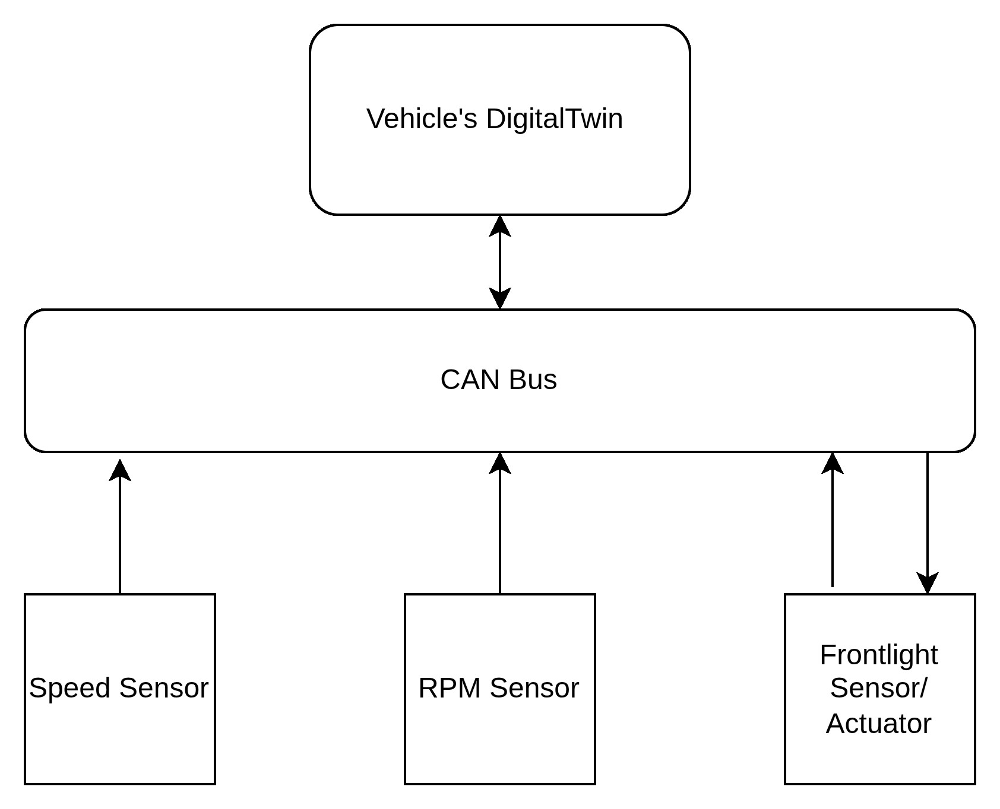

Preface
After having gone through several (not a very large number but not too few either) articles, blogs, video clips, presentations, github REPOs, and a couple of projects on the Eclipse SDV Project website, I have decided to try to build a prototype of a Digital Twin of a car. The objectives are:
-
Getting necessary exposure to the design approach taken by experts in the world of Sofware Defined Vehicle (SDV)
-
Applying whatever I learn, to realize a software-based manifestation
-
Incorporating some of the components/services/libraries that Eclipse SDV site is offering, in my project to get a better hold on those
-
Soliciting views/feedback from the experts/peeers in the field about the prototype, to fill in the gaps in my understanding
What do I intend to model?
In short, a Digital Twin of a car!
The assumption is that the physical world of the car is represented in its digital twin. This digital twin holds the virtual state of the entire car, captures telemetery and other data that are generated and also, actuates a particular device based upon the current state and information that arrives from devices.
Note: Obviously, this is very much simplistic in nature and details. I plan to expand and refine it as we go along.
Pictorially speaking .. (1)
Here is a simple, first-cut schematic representation:

The intent is clear. Sensors push (telemetry) data to a CAN Bus. The Actuator receives commands through the same CAN Bus. The Digital Twin receives events through the same CAN Bus, processes them, adjusts its state-elements, and sends actuation commands, as and when applicable.
The software structure
CAN Bus
The CAN Bus is a kind of a Central Nervous System. As such, the CAN Bus allows a car's various components to communicate in real-time, by sending and receiving signals.
My Laptop runs on Ubuntu Linux 22.10. Linux provides a robust, native CAN Emulation through its Virtual CAN ( vcan ) and SocketCAN. I am using this built-in facility
Digital Twin
The Digitial Twin is meant to hold an correct and most recent impression of the 'state' of the Physical-world Car. As the car starts, and moves, various parts of the car begins to generate signals. Based on those signals, the Digital Twin takes actions in some cases, and just reports in other cases. Moreover, It remembers what has just happened, because its future action is quitely likely to depend on that past signal.
I have modeled the DigitalTwin as an Actor at its core (and an FSM, discussed in the next section). An Actor's core principles of (1) ability to process messages passed asynchronously and (2) encapsulating its own 'state' (collection of variables that collectively decides what the next step should be), are the reasons for which I have chosen it. Every signal is seen as an Event that reaches the Digital Twin; the Digital Twin acts upon it and prepares itself for the next event (whatever that event may be).
Finite State Machine (FSM)
What do I mean by 'prepares itself for the next event'? Well, the Physical-world Car is generating the signals continuously and pushing them through the CAN Bus. The Digital Twin is receiving them in random order and processing them. The results are held inside the Digital Twin. At any given point in time, the collection of these results is considered the 'current state' of the Physical-world Car, as seen by its Digital Twin. This prepares the Digital Twin for the next signal (event, if you will) that arrives. The logic that is used to process the next signal depends on what has happened in the past; in other words, the 'current state'.
Unsurprisingly, this leads to framing the Digital Twin as a Finite State Machine. Together with the Actor, the State Machine bring the 'reactive nature' to the Digital Twin; based upon the 'current state' and the 'next signal', the Digital Twin decides what to do, and what to be prepared for.
Car part emulators
In the first version of the Digital Twin, I am assuming that the Physical-world Car, generates continuous telemetry about the current Speed and RPM. Additionally, it generates data about visibility around the car and takes command to switch on (or off) the front lights (viz., an actuator) .
Pictorially speaking .. (2)

Note elaborating the diagram
-
CAN Bus is run from the command line, as a virtual network device (accessibgle as a socket) named 'vcan0' that behaves as a CAN Interface on the machine (refer to README for details).
-
For the ease of running the prototype, I have two executables: (1) Gateway and (2) Emulator. Each runs in its own shell and communicates between themselves using the 'vcan0' virtual network interface.
-
Gateway holds the entire DigitalTwin as a component inside it.
-
Emulator generates telemetry data and writes these to the CAN Bus. Gateway reads, interpretes, transforms and sends these to the DigitialTwin thru the Controller.
-
The DigitalTwin pushes informationally richer messages based on the telemetry data to a channel that displays them (default: the stdout ). Addtionally, it executes some arbitrary (yet realistic) logic to generate commands for the front lights when the visibility goes below a hard-coded threshold.
This works fine. But, the design needs quite a few improvements. We will take this up in the next blogs.
Series: Prototyping a Software Defined Vehicle
Next → Stage II
All posts in this series: sdv-prototype